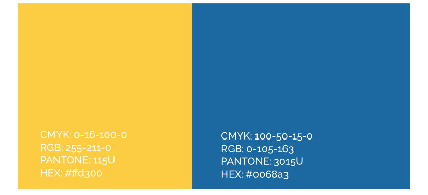
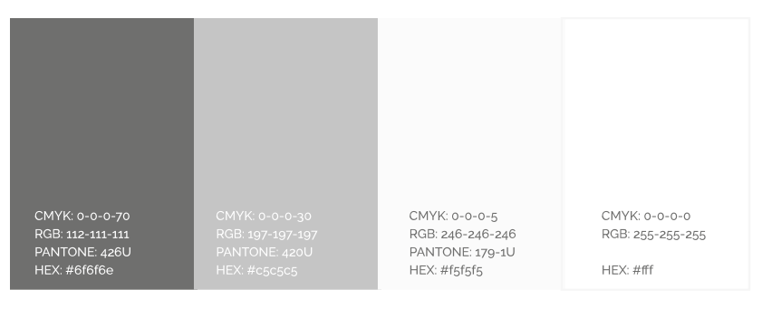

Kleur
Kleurgebuik
VZW Triton heeft twee hoofdkleuren. Ze weerspiegelen enthousiasme, sportiviteit en kracht. Ook is het een herkenningspunt want de kajakpolo bal heeft dezelffde kleuren. Het is belangijk volgende richtlijen te volgen.
Primaire kleur
De primaire kleurenvan VZW Triton weerspiegelen optimisme, energie, dynamiek en sportivieteit. Deze kleuren worden vooral voor hoofdingen, steunvlakken en accenten gebruikt het is natuurlijk ook de kleur van het logo.

Primaire kleur in gebruik
Zoals u kan zien worden hier de primaire kleuren in de affiche weergeven. Als we dit doen bij elk van de onderdelen zorgt dit voor samenhorigheid.

Secundaire kleuren
Als secundaire kleuren gebruiken we grijs varianten om eentoonigheid te vermijden. Het donkergrijs wordt voor de teksten gebruikt. De andere grijzen worden gebruikt voor steunvlakken.

Secundaire kleuren in gebruik
De secundaire kleuren zorgen ervoor dat er rust wordt gecreeërd in het werk. Respecteer de richtlijnen over het gebruik grondig.
HELP! Doe dit zeker niet
Gebruik van de juiste kleuren is zeer belangrijk. Gebruik nooit het pipetje om kleuren te bepalen, dit is meestal niet correct. Dit zorgt voor andere kleuren, kleuren waar Triton niet voor staat. Vervorm de kleuren ook niet naar de standaardkleuren uit het stalenpallet, maar geef de waarden in die hierboven vermeld staan.